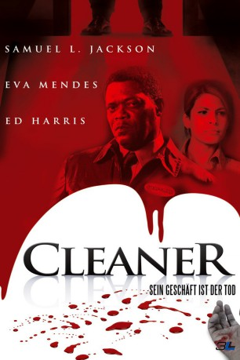

#2511 Cleaner - Sein Geschäft ist der Tod
Alternativ: Cleaner
 
 IMDB-Wertung: 6.1 / 10
IMDB-Wertung: 6.1 / 10  Metascore: 49
Metascore: 49 
In vielen Großstädten der USA gibt es Spezialisten, die sich darauf verstehen blutige Tatorte wieder in Ordnung zu bringen – es sind sogenannte Cleaner. Der ehemalige Polizist Tom Cutler ist einer von ihnen. Eines Tages wird er in eine Villa gerufen um die Überreste eines entsetzlichen Mordes zu beseitigen. Noch kann er nicht ahnen, dass dieses der Beginn einer unheilvollen Verschwörung ist.
Jahr: 2007
Dauer: 88 Minuten
FSK: 16
Land: USA Studio: Screen GemsTonspuren: DTS - ,
Untertitel:
Auflösung: 1080p (1920x800) Größe: 8704 MB
Genre: Krimi, Drama, Mystery, Thriller
Regisseur:  Renny Harlin
Renny Harlin
Drehbuch: Matthew Aldrich
Soundtrack: Richard Gibbs
Darsteller:
 Samuel L. Jackson als Tom Cutler
Samuel L. Jackson als Tom Cutler Ed Harris als Eddie Lorenzo
Ed Harris als Eddie Lorenzo Eva Mendes als Ann Norcut
Eva Mendes als Ann Norcut Luis Guzmán als Det. Jim Vargas
Luis Guzmán als Det. Jim Vargas Keke Palmer als Rose Cutler
Keke Palmer als Rose Cutler Maggie Lawson als Cherie
Maggie Lawson als Cherie Jose Pablo Cantillo als Miguel
Jose Pablo Cantillo als Miguel Robert Forster als Arlo Grange
Robert Forster als Arlo Grange Marc Macaulay als Vic
Marc Macaulay als Vic- Rosalind Rubin als Crying Woman
 Ritchie Montgomery als George Walton
Ritchie Montgomery als George Walton- Patrick Kirton als Jeff Lang
- Peyton Wetzel als Hotel Manager
- Yuriana Kim als Korean Woman
 Peter Franzén als Police Officer Bronson
Peter Franzén als Police Officer Bronson- Sarah Ann Schultz als Reporter Paula Felton
 Christa Campbell als Coach Beth Jensen
Christa Campbell als Coach Beth Jensen- Jackson Hurst als Paramedic
- Ron Jacobsohn als Church Custodian
- Heather Bloom als Reunion Friend , uncredited
 Ron Fagan als Detective , uncredited
Ron Fagan als Detective , uncredited Ted Ferguson als The Hot Dog Man , uncredited
Ted Ferguson als The Hot Dog Man , uncredited- Rosemary Garris als Detective , uncredited
- Rodney Hill Jr. als Drug Dealer , uncredited
- Walt Hollis als Off Duty Police Officer , uncredited
- Richard F Law als Police Officer , uncredited
- Terry Milam als Victim's Neighbor , uncredited
- Wayne Douglas Morgan als Off Duty Police Officer , uncredited
 James Paul als Ribbon Cutting Ceremony Participant , uncredited
James Paul als Ribbon Cutting Ceremony Participant , uncredited- Cynthia Riser als News Crew Reporter , uncredited
 Bill Stinchcomb als Detective , uncredited
Bill Stinchcomb als Detective , uncredited George Wilson als Detective , uncredited
George Wilson als Detective , uncredited- Julie Wittner als Voice Over , uncredited
- Edrick Browne als Det. Darrin Harris
- Mike Guy als Priest #1
- Richard Folmer als Priest #2
- James Barnes als Lawyer
- Linda Leonard als Francine Mason
- Stephanie Barnes als Marcy
- Jada K. Cox als Coach Kylie Harris
- Sara Jane Henriques als Gabriella
- Angelina Rivera als Lila
- Lili Asvar als Detective , uncredited
- John T. Billingsley als Pedestrian , uncredited
- Kip Cummings als Hearse Driver , uncredited
- Jon Dainty als Off-Duty Fireman , uncredited
- Brad Dison als News Crew Boom Operator , uncredited
- Tammy Eaton als Reunion Friend , uncredited
- Chuck Halley als Newspaper Photographer , uncredited
- Michael J. Hebert als Business Executive , uncredited
Datei: X:\2007(A-F)\Cleaner - Sein Geschäft ist der Tod (2007, FSK16, 1920x800).mkv seit 16.11.2015
Festplatte: HD 2007(A-Z)-2008(A-F)
 Es gibt insgesamt 65 Filme in der Gruppe '2007(A-F)'
Es gibt insgesamt 65 Filme in der Gruppe '2007(A-F)'